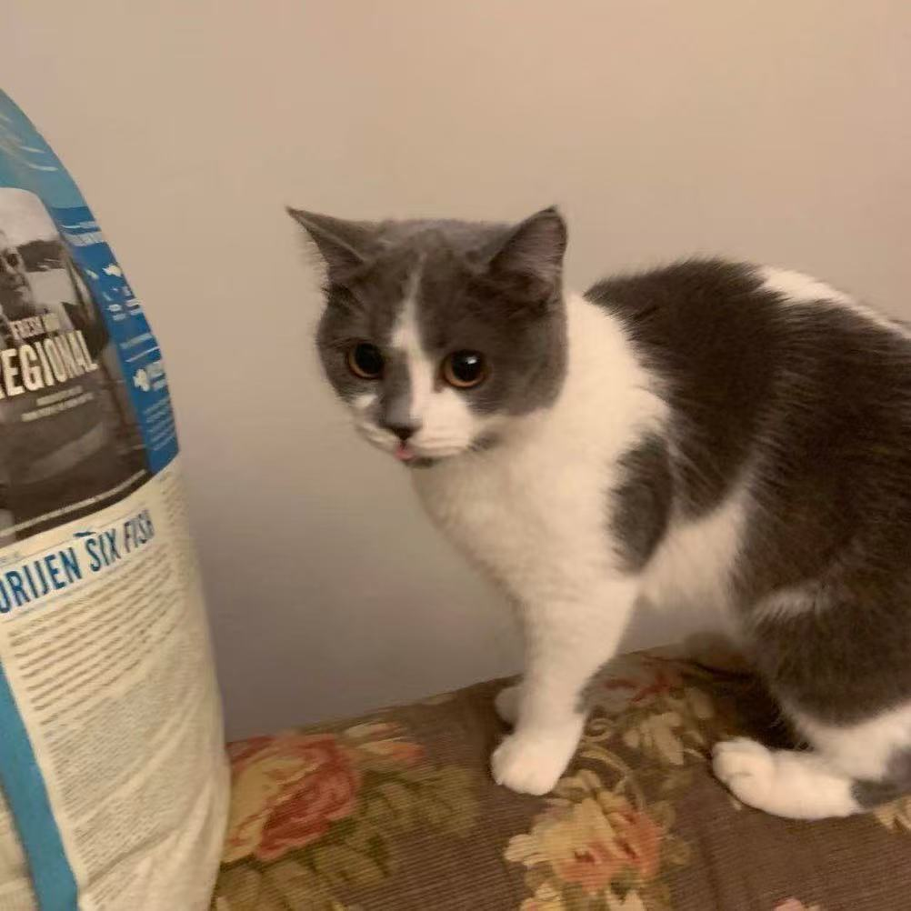

Ruike Lin
My name is Ruike Lin, and I'm a senior in Information Science. I am interested in exercising or sleeping in the gym in my free time. The reason why I chose this course is that I need to meet the course requirements of my major, and I am very interested in the course arrangement in the later part, which is to discuss web design.
Yunning Zhang
My name is Yunning Zhang, and I’m currently a senior majoring in Information Science. I chose this class because I’m really interested in understanding how technology intersects with society, and I think topics like bias, discrimination, and intersectionality are really important in today’s world— especially in the tech industry.
We Love Animals!
Both of us are passionate animal lovers! Here are some adorable images of a cat and a dog to share our love for pets.